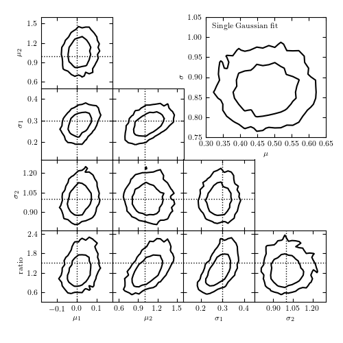

MCMC Model Comparison¶
This example uses Bayesian MCMC to select between two models for a dataset. The dataset is a mixture of two gaussian distributions, and two MCMC models are fit: one with a single gaussian, one with two gaussians of different widths.
@pickle_results: computing results and saving to 'model_comparison_traces.pkl'
[ 0% ]
[ 1% ] 100 of 10000 complete
[* 2% ] 200 of 10000 complete
[* 3% ] 300 of 10000 complete
[** 4% ] 400 of 10000 complete
[** 5% ] 500 of 10000 complete
[** 6% ] 600 of 10000 complete
[*** 7% ] 700 of 10000 complete
[*** 8% ] 800 of 10000 complete
[*** 9% ] 900 of 10000 complete
[**** 10% ] 1000 of 10000 complete
[**** 11% ] 1100 of 10000 complete
[***** 12% ] 1200 of 10000 complete
[***** 13% ] 1300 of 10000 complete
[***** 14% ] 1400 of 10000 complete
[****** 15% ] 1500 of 10000 complete
[****** 16% ] 1600 of 10000 complete
[****** 17% ] 1700 of 10000 complete
[******* 18% ] 1800 of 10000 complete
[******* 19% ] 1900 of 10000 complete
[******** 20% ] 2000 of 10000 complete
[******** 21% ] 2100 of 10000 complete
[******** 22% ] 2200 of 10000 complete
[********* 23% ] 2300 of 10000 complete
[********* 24% ] 2400 of 10000 complete
[********** 25% ] 2500 of 10000 complete
[********** 26% ] 2600 of 10000 complete
[********** 27% ] 2700 of 10000 complete
[*********** 28% ] 2800 of 10000 complete
[*********** 29% ] 2900 of 10000 complete
[*********** 30% ] 3000 of 10000 complete
[************ 31% ] 3100 of 10000 complete
[************ 32% ] 3200 of 10000 complete
[************* 33% ] 3300 of 10000 complete
[************* 34% ] 3400 of 10000 complete
[************* 35% ] 3500 of 10000 complete
[************** 36% ] 3600 of 10000 complete
[************** 37% ] 3700 of 10000 complete
[************** 38% ] 3800 of 10000 complete
[*************** 39% ] 3900 of 10000 complete
[*************** 40% ] 4000 of 10000 complete
[**************** 41% ] 4100 of 10000 complete
[**************** 42% ] 4200 of 10000 complete
[**************** 43% ] 4300 of 10000 complete
[*****************44% ] 4400 of 10000 complete
[*****************45% ] 4500 of 10000 complete
[*****************46% ] 4600 of 10000 complete
[*****************47% ] 4700 of 10000 complete
[*****************48% ] 4800 of 10000 complete
[*****************49% ] 4900 of 10000 complete
[*****************50% ] 5000 of 10000 complete
[*****************51% ] 5100 of 10000 complete
[*****************52% ] 5200 of 10000 complete
[*****************53% ] 5300 of 10000 complete
[*****************54%* ] 5400 of 10000 complete
[*****************55%* ] 5500 of 10000 complete
[*****************56%* ] 5600 of 10000 complete
[*****************57%** ] 5700 of 10000 complete
[*****************58%** ] 5800 of 10000 complete
[*****************59%** ] 5900 of 10000 complete
[*****************60%*** ] 6000 of 10000 complete
[*****************61%*** ] 6100 of 10000 complete
[*****************62%**** ] 6200 of 10000 complete
[*****************63%**** ] 6300 of 10000 complete
[*****************64%**** ] 6400 of 10000 complete
[*****************65%***** ] 6500 of 10000 complete
[*****************66%***** ] 6600 of 10000 complete
[*****************67%***** ] 6700 of 10000 complete
[*****************68%****** ] 6800 of 10000 complete
[*****************69%****** ] 6900 of 10000 complete
[*****************70%******* ] 7000 of 10000 complete
[*****************71%******* ] 7100 of 10000 complete
[*****************72%******* ] 7200 of 10000 complete
[*****************73%******** ] 7300 of 10000 complete
[*****************74%******** ] 7400 of 10000 complete
[*****************75%********* ] 7500 of 10000 complete
[*****************76%********* ] 7600 of 10000 complete
[*****************77%********* ] 7700 of 10000 complete
[*****************78%********** ] 7800 of 10000 complete
[*****************79%********** ] 7900 of 10000 complete
[*****************80%********** ] 8000 of 10000 complete
[*****************81%*********** ] 8100 of 10000 complete
[*****************82%*********** ] 8200 of 10000 complete
[*****************83%************ ] 8300 of 10000 complete
[*****************84%************ ] 8400 of 10000 complete
[*****************85%************ ] 8500 of 10000 complete
[*****************86%************* ] 8600 of 10000 complete
[*****************87%************* ] 8700 of 10000 complete
[*****************88%************* ] 8800 of 10000 complete
[*****************89%************** ] 8900 of 10000 complete
[*****************90%************** ] 9000 of 10000 complete
[*****************91%*************** ] 9100 of 10000 complete
[*****************92%*************** ] 9200 of 10000 complete
[*****************93%*************** ] 9300 of 10000 complete
[*****************94%**************** ] 9400 of 10000 complete
[*****************95%**************** ] 9500 of 10000 complete
[*****************96%**************** ] 9600 of 10000 complete
[*****************97%***************** ] 9700 of 10000 complete
[*****************98%***************** ] 9800 of 10000 complete
[*****************99%******************] 9900 of 10000 complete
[****************100%******************] 10000 of 10000 complete
[ 0% ]
[ 1% ] 100 of 10000 complete
[* 2% ] 200 of 10000 complete
[* 3% ] 300 of 10000 complete
[** 4% ] 400 of 10000 complete
[** 5% ] 500 of 10000 complete
[** 6% ] 600 of 10000 complete
[*** 7% ] 700 of 10000 complete
[*** 8% ] 800 of 10000 complete
[*** 9% ] 900 of 10000 complete
[**** 10% ] 1000 of 10000 complete
[**** 11% ] 1100 of 10000 complete
[***** 12% ] 1200 of 10000 complete
[***** 13% ] 1300 of 10000 complete
[***** 14% ] 1400 of 10000 complete
[****** 15% ] 1500 of 10000 complete
[****** 16% ] 1600 of 10000 complete
[****** 17% ] 1700 of 10000 complete
[******* 18% ] 1800 of 10000 complete
[******* 19% ] 1900 of 10000 complete
[******** 20% ] 2000 of 10000 complete
[******** 21% ] 2100 of 10000 complete
[******** 22% ] 2200 of 10000 complete
[********* 23% ] 2300 of 10000 complete
[********* 24% ] 2400 of 10000 complete
[********** 25% ] 2500 of 10000 complete
[********** 26% ] 2600 of 10000 complete
[********** 27% ] 2700 of 10000 complete
[*********** 28% ] 2800 of 10000 complete
[*********** 29% ] 2900 of 10000 complete
[*********** 30% ] 3000 of 10000 complete
[************ 31% ] 3100 of 10000 complete
[************ 32% ] 3200 of 10000 complete
[************* 33% ] 3300 of 10000 complete
[************* 34% ] 3400 of 10000 complete
[************* 35% ] 3500 of 10000 complete
[************** 36% ] 3600 of 10000 complete
[************** 37% ] 3700 of 10000 complete
[************** 38% ] 3800 of 10000 complete
[*************** 39% ] 3900 of 10000 complete
[*************** 40% ] 4000 of 10000 complete
[**************** 41% ] 4100 of 10000 complete
[**************** 42% ] 4200 of 10000 complete
[**************** 43% ] 4300 of 10000 complete
[*****************44% ] 4400 of 10000 complete
[*****************45% ] 4500 of 10000 complete
[*****************46% ] 4600 of 10000 complete
[*****************47% ] 4700 of 10000 complete
[*****************48% ] 4800 of 10000 complete
[*****************49% ] 4900 of 10000 complete
[*****************50% ] 5000 of 10000 complete
[*****************51% ] 5100 of 10000 complete
[*****************52% ] 5200 of 10000 complete
[*****************53% ] 5300 of 10000 complete
[*****************54%* ] 5400 of 10000 complete
[*****************55%* ] 5500 of 10000 complete
[*****************56%* ] 5600 of 10000 complete
[*****************57%** ] 5700 of 10000 complete
[*****************58%** ] 5800 of 10000 complete
[*****************59%** ] 5900 of 10000 complete
[*****************60%*** ] 6000 of 10000 complete
[*****************61%*** ] 6100 of 10000 complete
[*****************62%**** ] 6200 of 10000 complete
[*****************63%**** ] 6300 of 10000 complete
[*****************64%**** ] 6400 of 10000 complete
[*****************65%***** ] 6500 of 10000 complete
[*****************66%***** ] 6600 of 10000 complete
[*****************67%***** ] 6700 of 10000 complete
[*****************68%****** ] 6800 of 10000 complete
[*****************69%****** ] 6900 of 10000 complete
[*****************70%******* ] 7000 of 10000 complete
[*****************71%******* ] 7100 of 10000 complete
[*****************72%******* ] 7200 of 10000 complete
[*****************73%******** ] 7300 of 10000 complete
[*****************74%******** ] 7400 of 10000 complete
[*****************75%********* ] 7500 of 10000 complete
[*****************76%********* ] 7600 of 10000 complete
[*****************77%********* ] 7700 of 10000 complete
[*****************78%********** ] 7800 of 10000 complete
[*****************79%********** ] 7900 of 10000 complete
[*****************80%********** ] 8000 of 10000 complete
[*****************81%*********** ] 8100 of 10000 complete
[*****************82%*********** ] 8200 of 10000 complete
[*****************83%************ ] 8300 of 10000 complete
[*****************84%************ ] 8400 of 10000 complete
[*****************85%************ ] 8500 of 10000 complete
[*****************86%************* ] 8600 of 10000 complete
[*****************87%************* ] 8700 of 10000 complete
[*****************88%************* ] 8800 of 10000 complete
[*****************89%************** ] 8900 of 10000 complete
[*****************90%************** ] 9000 of 10000 complete
[*****************91%*************** ] 9100 of 10000 complete
[*****************92%*************** ] 9200 of 10000 complete
[*****************93%*************** ] 9300 of 10000 complete
[*****************94%**************** ] 9400 of 10000 complete
[*****************95%**************** ] 9500 of 10000 complete
[*****************96%**************** ] 9600 of 10000 complete
[*****************97%***************** ] 9700 of 10000 complete
[*****************98%***************** ] 9800 of 10000 complete
[*****************99%******************] 9900 of 10000 complete
[****************100%******************] 10000 of 10000 complete
# Author: Jake VanderPlas <vanderplas@astro.washington.edu>
# License: BSD
# The figure produced by this code is published in the textbook
# "Statistics, Data Mining, and Machine Learning in Astronomy" (2013)
# For more information, see http://astroML.github.com
import numpy as np
from matplotlib import pyplot as plt
from scipy.special import gamma
from scipy.stats import norm
from sklearn.neighbors import BallTree
from astroML.density_estimation import GaussianMixture1D
from astroML.plotting import plot_mcmc
from astroML.decorators import pickle_results
# hack to fix an import issue in older versions of pymc
import scipy
scipy.derivative = scipy.misc.derivative
import pymc
def get_logp(S, model):
"""compute log(p) given a pyMC model"""
M = pymc.MAP(model)
traces = np.array([S.trace(s)[:] for s in S.stochastics])
logp = np.zeros(traces.shape[1])
for i in range(len(logp)):
logp[i] = -M.func(traces[:, i])
return logp
def estimate_bayes_factor(traces, logp, r=0.05, return_list=False):
"""Estimate the bayes factor using the local density of points"""
D, N = traces.shape
# compute volume of a D-dimensional sphere of radius r
Vr = np.pi ** (0.5 * D) / gamma(0.5 * D + 1) * (r ** D)
# use neighbor count within r as a density estimator
bt = BallTree(traces.T)
count = bt.query_radius(traces.T, r=r, count_only=True)
BF = logp + np.log(N) + np.log(Vr) - np.log(count)
if return_list:
return BF
else:
p25, p50, p75 = np.percentile(BF, [25, 50, 75])
return p50, 0.7413 * (p75 - p25)
#------------------------------------------------------------
# Generate the data
mu1_in = 0
sigma1_in = 0.3
mu2_in = 1
sigma2_in = 1
ratio_in = 1.5
N = 200
np.random.seed(10)
gm = GaussianMixture1D([mu1_in, mu2_in],
[sigma1_in, sigma2_in],
[ratio_in, 1])
x_sample = gm.sample(N)
#------------------------------------------------------------
# Set up pyMC model: single gaussian
# 2 parameters: (mu, sigma)
M1_mu = pymc.Uniform('M1_mu', -5, 5, value=0)
M1_log_sigma = pymc.Uniform('M1_log_sigma', -10, 10, value=0)
@pymc.deterministic
def M1_sigma(M1_log_sigma=M1_log_sigma):
return np.exp(M1_log_sigma)
@pymc.deterministic
def M1_tau(M1_sigma=M1_sigma):
return 1. / M1_sigma ** 2
M1 = pymc.Normal('M1', M1_mu, M1_tau, observed=True, value=x_sample)
model1 = dict(M1_mu=M1_mu, M1_log_sigma=M1_log_sigma,
M1_sigma=M1_sigma,
M1_tau=M1_tau, M1=M1)
#------------------------------------------------------------
# Set up pyMC model: double gaussian
# 5 parameters: (mu1, mu2, sigma1, sigma2, ratio)
def doublegauss_like(x, mu1, mu2, sigma1, sigma2, ratio):
"""log-likelihood for double gaussian"""
r1 = ratio / (1. + ratio)
r2 = 1 - r1
L = r1 * norm(mu1, sigma1).pdf(x) + r2 * norm(mu2, sigma2).pdf(x)
L[L == 0] = 1E-16 # prevent divide-by-zero error
logL = np.log(L).sum()
if np.isinf(logL):
raise pymc.ZeroProbability
else:
return logL
def rdoublegauss(mu1, mu2, sigma1, sigma2, ratio, size=None):
"""random variable from double gaussian"""
r1 = ratio / (1. + ratio)
r2 = 1 - r1
R = np.asarray(np.random.random(size))
Rshape = R.shape
R = np.atleast1d(R)
mask1 = (R < r1)
mask2 = ~mask1
N1 = mask1.sum()
N2 = R.size - N1
R[mask1] = norm(mu1, sigma1).rvs(N1)
R[mask2] = norm(mu2, sigma2).rvs(N2)
return R.reshape(Rshape)
DoubleGauss = pymc.stochastic_from_dist('doublegauss',
logp=doublegauss_like,
random=rdoublegauss,
dtype=np.float,
mv=True)
# set up our Stochastic variables, mu1, mu2, sigma1, sigma2, ratio
M2_mu1 = pymc.Uniform('M2_mu1', -5, 5, value=0)
M2_mu2 = pymc.Uniform('M2_mu2', -5, 5, value=1)
M2_log_sigma1 = pymc.Uniform('M2_log_sigma1', -10, 10, value=0)
M2_log_sigma2 = pymc.Uniform('M2_log_sigma2', -10, 10, value=0)
@pymc.deterministic
def M2_sigma1(M2_log_sigma1=M2_log_sigma1):
return np.exp(M2_log_sigma1)
@pymc.deterministic
def M2_sigma2(M2_log_sigma2=M2_log_sigma2):
return np.exp(M2_log_sigma2)
M2_ratio = pymc.Uniform('M2_ratio', 1E-3, 1E3, value=1)
M2 = DoubleGauss('M2', M2_mu1, M2_mu2, M2_sigma1, M2_sigma2, M2_ratio,
observed=True, value=x_sample)
model2 = dict(M2_mu1=M2_mu1, M2_mu2=M2_mu2,
M2_log_sigma1=M2_log_sigma1, M2_log_sigma2=M2_log_sigma2,
M2_sigma1=M2_sigma1, M2_sigma2=M2_sigma2,
M2_ratio=M2_ratio, M2=M2)
#------------------------------------------------------------
# Set up MCMC sampling
# We'll save the results, because the calculation takes a while
@pickle_results('model_comparison_traces.pkl')
def compute_MCMC_models(Niter=10000, burn=1000, rseed=0):
pymc.numpy.random.seed(rseed)
S1 = pymc.MCMC(model1)
S1.sample(iter=Niter, burn=burn)
trace1 = np.vstack([S1.trace('M1_mu')[:],
S1.trace('M1_sigma')[:]])
logp1 = get_logp(S1, model1)
S2 = pymc.MCMC(model2)
S2.sample(iter=Niter, burn=burn)
trace2 = np.vstack([S2.trace('M2_mu1')[:],
S2.trace('M2_mu2')[:],
S2.trace('M2_sigma1')[:],
S2.trace('M2_sigma2')[:],
S2.trace('M2_ratio')[:]])
logp2 = get_logp(S2, model2)
return trace1, logp1, trace2, logp2
trace1, logp1, trace2, logp2 = compute_MCMC_models()
#------------------------------------------------------------
# Compute Odds ratio with density estimation technique
BF1, dBF1 = estimate_bayes_factor(trace1, logp1, r=0.02)
BF2, dBF2 = estimate_bayes_factor(trace2, logp2, r=0.05)
#------------------------------------------------------------
# Plot the results
fig = plt.figure(figsize=(10, 10))
labels = [r'$\mu_1$',
r'$\mu_2$',
r'$\sigma_1$',
r'$\sigma_2$',
r'${\rm ratio}$']
true_values = [mu1_in,
mu2_in,
sigma1_in,
sigma2_in,
ratio_in]
limits = [(-0.24, 0.12),
(0.55, 1.75),
(0.15, 0.45),
(0.55, 1.3),
(0.25, 2.1)]
# we assume mu1 < mu2, but the results may be switched
# due to the symmetry of the problem. If so, switch back
if np.median(trace2[0]) > np.median(trace2[1]):
trace2 = trace2[[1, 0, 3, 2, 4], :]
N2_norm_mu = N2.mu[N2.M2_mu2, N2.M2_mu1,
N2.M2_sigma2, N2.M2_sigma1, N2.M2_ratio]
N2_norm_Sig = N2.C[N2.M2_mu2, N2.M2_mu1,
N2.M2_sigma2, N2.M2_sigma1, N2.M2_ratio]
# Plot the simple 2-component model
ax, = plot_mcmc(trace1, fig=fig, bounds=[0.6, 0.6, 0.95, 0.95],
limits=[(0.3, 0.8), (0.75, 1.15)],
labels=[r'$\mu$', r'$\sigma$'], colors='k', linewidths=2)
ax.text(0.03, 0.97, "Single Gaussian fit", va='top', ha='left',
transform=ax.transAxes, fontsize=14)
# Plot the 5-component model
ax_list = plot_mcmc(trace2, limits=limits, labels=labels,
true_values=true_values, fig=fig,
colors='k', linewidths=2)
for ax in ax_list:
for axis in [ax.xaxis, ax.yaxis]:
axis.set_major_locator(plt.MaxNLocator(4))
plt.show()